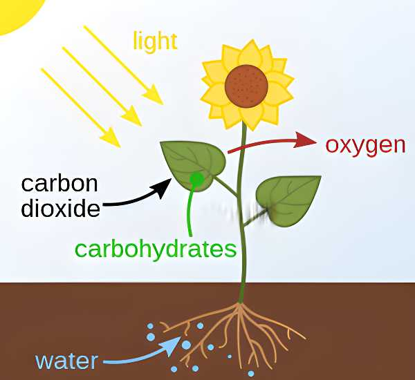
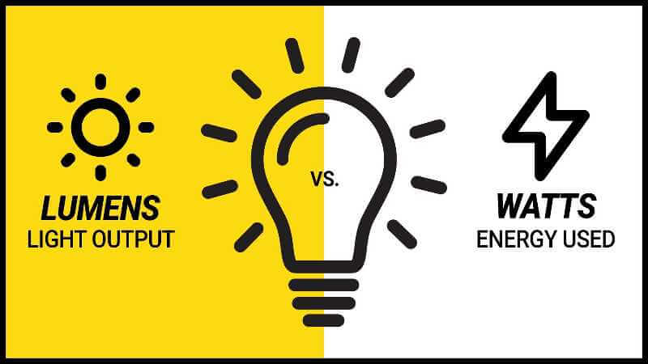
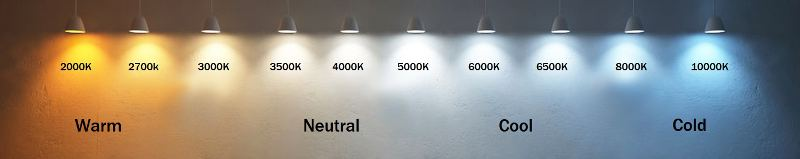
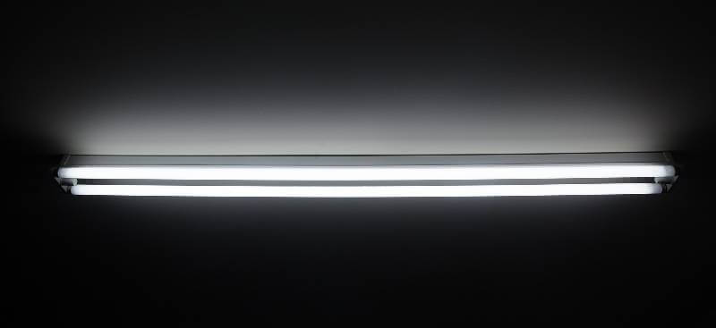
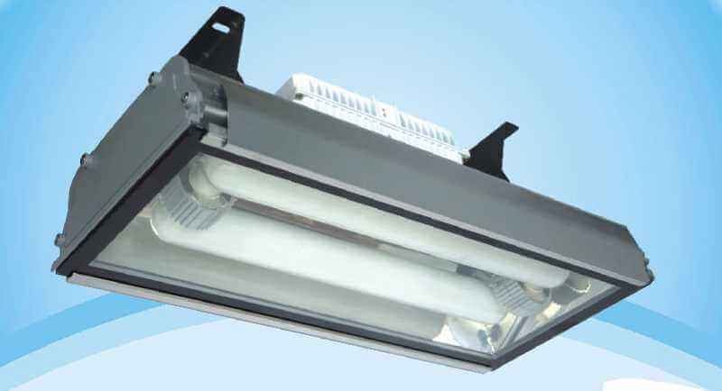
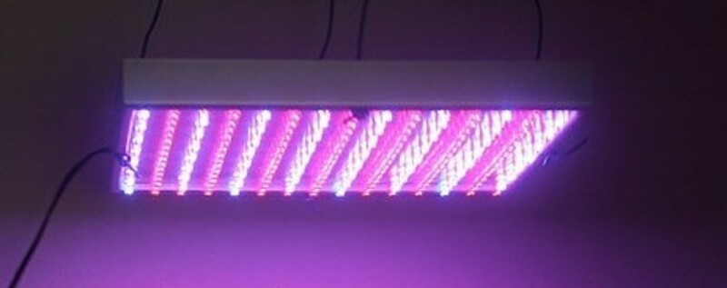

How to Choose the Best Grow Lights for your Hydroponic System
The Definitive Guide
Skip to the easy part. Our top 7 grow lights for sale.
If you’re building your hydroponic system indoors, or you’re in need of extra light,
you need to grow lights. Grow
lights are probably the most essential item for your hydroponic system, and there are so many options. Each
light has
its advantages and disadvantages. We’ve collected all of the information on hydroponic grow lights for this
guide to
help guide you through this challenging process. We will start by looking at how plants use light and how light
is measured
How Plants use Light

Plants rely on the energy in sunlight to produce the nutrients they need.
The process starts with chlorophyll. Chlorophyll is a light-absorbing pigment inside of
chloroplasts, an organelle of a
plant cell. Chlorophyll absorbs energy from blue and red light waves and reflects green. This is why plants are
green.
Energy from the light is used to facilitate a reaction between CO2 and H2O. In the
cell, the water is oxidized while the
carbon dioxide is reduced forming O2 and glucose molecules.
Without light, plants are unable to go through the photosynthetic process. They cannot
continue to grow and produce. If
there is too little light, the photosynthetic process will not occur quickly enough and the plant will become
limp and
white.
How Light Output is Measured

Each bulb produces a different amount of light.
There a several ways to measure light level. Overall, they all mean the same thing.
Some are nearly obsolete due to
their lack of relatability anymore. Foot candles/ candle power used to be used, especially in the flashlight
industry,
but the term “candle power” means a lot less than it used to.
Lumens is another scale used to measure light output. We do see this used a lot, again
in the flashlight industry, It is
a reflection of how bright a light is. This is great for seeing how well something will light up a room but
doesn’t tell
the full story for grow lights. The light required for plants goes beyond the physical spectrum, so lumens
cannot
represent the power of a hydroponic grow light.
Wattage is most commonly used to measure grow light output. Higher wattage means more
light and energy being input into
the system. Wattage can be further broken down into Watts per area to display how much energy is being output to
each
plant. When it comes to growing plants, it is generally said that plants need 20-30 watts of light per square
foot. But
even wattage does not tell the full story Some lights are more efficient than others, and some lights do not
produce the
full spectrum of light.

Color temperature is also a primary metric in light output. Color temperature refers to
the color of light compared to
the natural color of light produced by the sun. “Cooler” color temperature lights produce light on the blue end
of the
spectrum, and “warmer” lights produce light towards the red end of the spectrum. Different color temperature is
best for
different plants and setups. If you can't figure out what color temperature is best for you, get a full spectrum
of
natural color temperature light.
Light is measured by its wavelength too. Visible light has a wavelength of 400 to 700
nanometers (nm). A red light is
700nm, and violet light is closer to 400nm. Typical indoor grow lights have a range of 450 to 700 nm.
Types of Grow Lights
There are many different grow lights and many different types of grow lights. Each has its
advantages and disadvantages.
Fluorescent Lights
Fluorescent lights are composed of a glass tube, argon gas, and mercury gas. Electricity is used
to excite the gas
particles and produce light. Fluorescent lights have been the most common grow light used in the industry for a
long
time, and for a good reason. They are very economical to run. Another significant benefit of fluorescent bulbs
is
they
run pretty cool, so bulbs can be placed very close to plants without the risk of burning them. This can increase
efficiency in that you use your light.
T5 Lights

A type of fluorescent light that uses T5 bulbs to grow plants. They are not super powerful, but
they are widespread. T5
lamps are not only used in grow lights but in warehouses and other industrial lighting. The name T5 comes from
the
5/8th
in diameter of the lamp. Also, T5 lamps are claimed to be up to 4 times as efficient as standard fluorescent
bulbs. T5
lights are the cheapest grow lights available, and they are pretty energy efficient too, converting
approximately
15% of
their electrical energy to light, but not as efficient as LEDs. T5s come in lengths of 2 feet and 4 feet, most
commonly.
Most fixtures hold either 1,2,4,8, or 12 tubes, so the setup is very customizable.
T5 lights tend to output light towards the blue end of the spectrum. This is optimal
for
plants that do not flower to
fruit, like lettuce. T5 lights may not be optimal for plants that grow produce, like tomatoes, but they will
still
work
fine.
HID Lights

Also known as high-Intensity discharge lights, these lights are heavy-duty. They work by sending
an electrical discharge
between the ends and exciting the ionized gas within. HID lights are dimmable, so you can customize your light.
In
addition, they produce tons of UV rays, a necessity for plant growth not found in other types of lights. UV rays
help
plants produce essential oils (as a “sunblock”), which can enhance the flavor and smell of produce.
HID lights come in two types:
Metal Halid: Electric current is passed through mercury and metal halide gas to produce
light. The light produced is
towards the bluer end of the spectrum, so it is excellent for the vegetative stage (after germination and before
flowering) and non-flowering plants.
High-Pressure Sodium: This combination of metals and gasses produces light toward the
red
end of the spectrum. Red light
is best suited for the flowering stage (when the fruit is grown).
HIDs lose their light intensity over time. After 10,000 hours, the light produces about
70% less than its initial
output. Ten thousand hours is 416 days, but if you run your lights for 18 hours daily, you'll get 555 days out
of
them.
So this is a significant disadvantage of HID lights. Also, HID lights get hot; You can't have them close to the
plants,
or you risk burning them.
LED Lights

LEDs are a new introduction to the hydroponics space. It took a while for LEDs to enter the
space
due to confusion on if
they produced good full spectrum light for plants. The lights are a little more expensive, but over time the
advantages
in efficiency will pay for it. As they gain more popularity, prices will fall. Unfortunately, some manufacturers
sell
cheap LEDs that aren't strong enough for the flowing phase. To avoid this, only purchase lights rated at two
micromoles
per watt at a minimum.
LEDs produce almost no heat; they are 90% efficient. They can be placed directly on the
plants with no downsides.
Some LED lights only include red and blue diodes, not green. This cuts down on cost,
increases efficiency, and produces
a purple light. Since plants reflect most green light, these lights are super efficient. However, they do look
ugly to
some, and it is hard to see discoloration in the plants, so be careful.
Induction Lighting
These are very similar to fluorescent lights and work in a similar manner. They operate in the
same way as fluorescents,
but magnets ignite the gas. So no lighter or electrical arc in the tube. Their theoretical life span is 100,000
hours,
which is 10x more than standard fluorescents. Induction lights are about twice as efficient as standard
fluorescents but
still not as efficient as LEDs.
Interestingly, induction lights can interfere with cell and wifi signals, which might
not
be best for a home operation.
They have the classic fluorescent hum, but on steroids and are so new they have little information online.
How to decide
Not all grow lights are the same. If you can afford it, go with LEDs. They offer the best
long-term operation with
basically no heat and high efficiency. If you want something wide-scale, T5 lights are best. They are sold in
almost
every home improvement store as “shop lights”. HID lights simulate the full spectrum of light the sun outputs
best
and
will produce the highest quality foods.
Questions
We would be happy to hear from you if you have any questions. We can talk hydroponics, grow
lights, or whatever you
want. Hydroponicsathome.us@gmail.com